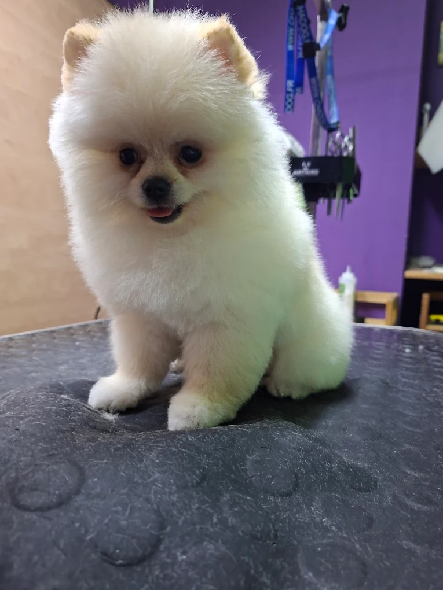
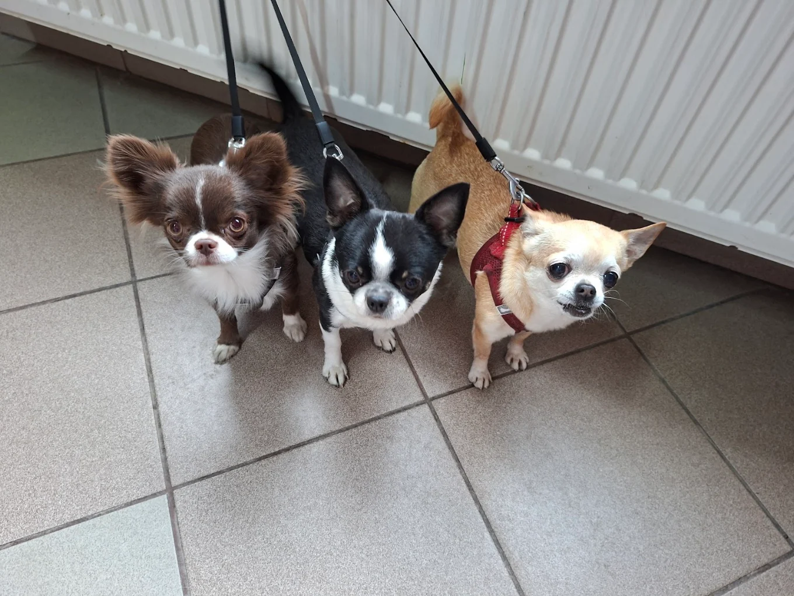
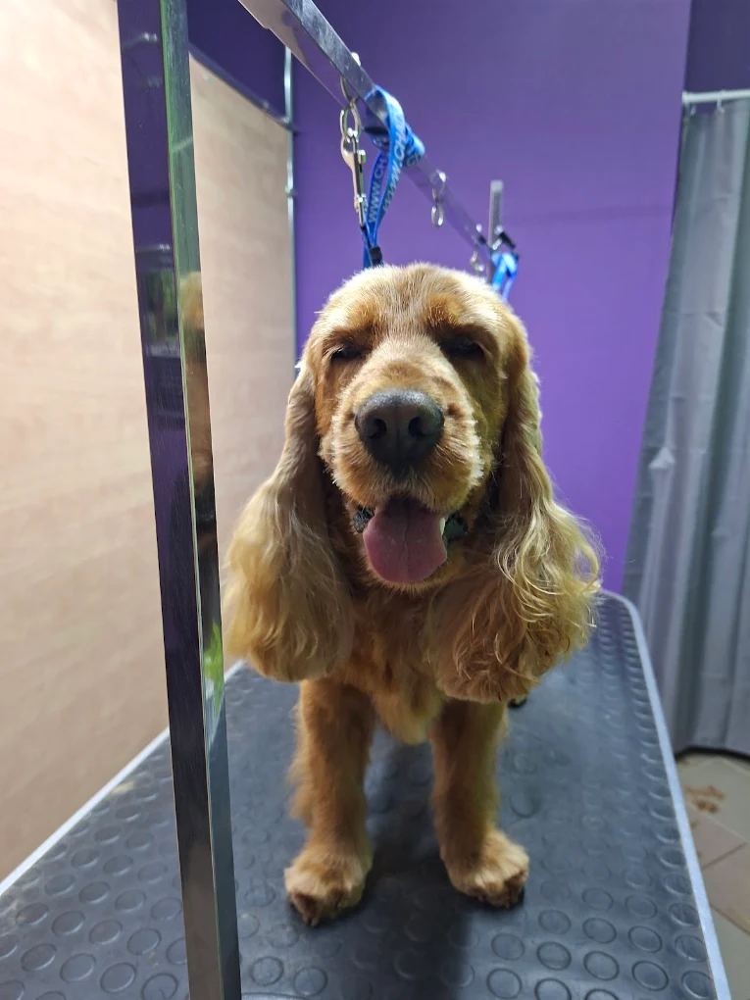

Fryzjer dla zwierząt · Piotrków Trybunalski
Psia Łapka
Strzyżenie · Kąpiel · Pielęgnacja
★★★★★ 35+ opinii w Google
Kącik tuż przy Poczcie na Jagiellońskiej. Twój pies albo kot dostaje tu tyle czasu i cierpliwości, ile akurat potrzebuje. Bez pośpiechu, bez stresu.
Cennik
// ceny orientacyjne, dokładną wycenę ustalimy przez telefon
Nie wiesz, co wybrać? Zadzwoń, doradzimy przez telefon.
Nasze metamorfozy
// kto od nas wychodzi









Opinie
// ponad 35 opinii w Google, prawie same pozytywne
„Przemiła obsługa! Pani z miłym podejściem do pupili! Kolejne strzyżenie i kolejna piękna fryzura.”
„Wspaniałe miejsce pełne ciepła i prawdziwej miłości do zwierząt. Od wejścia czuć przyjazną atmosferę, a personel jest miły, cierpliwy i troskliwy.”
„Byłam w tym salonie i jestem mega zadowolona! Obsługa bardzo miła, profesjonalna i widać, że naprawdę kochają zwierzęta.”
„Najlepsze ręce, w które mógł trafić mój piesek. Zawsze jesteśmy zadowoleni, super podejście do czworonoga i duży profesjonalizm.”
„Cudowne strzyżenie szpica miniaturowego, polecam w 100%!”
„Kolejne strzyżenie i, jak zwykle, przepięknie, punktualnie, bezstresowo. Jak najbardziej polecam.”
Wpadnij do nas
// zapisy telefonicznie albo przez Facebooka
Sobota: 10:00–14:00